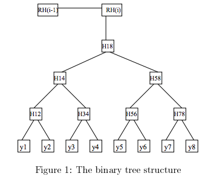
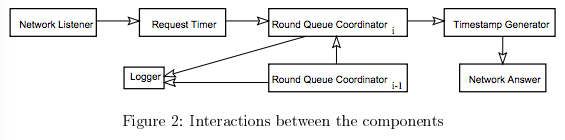

Scientific progress goes 'boink'
Ph.D. Candidate
Princeton University
Department of Computer Science
Henri Massias, Xavier Serret Avila, Jean-Jacques Quisquater (original)
This paper presents our design of a timestamping system for the Belgian
projet TIMESEC. We first introdue the timestamping method used and we
justify our choice for it. Then we present the design of our implementation
as well as some of the important issues we found and the solutions we gave
to them.
The creation date of digital documents and the times expressed in them are becoming increasingly important as digital documents are being introduced into the legal domain.
We define “digital timestamp” as a digital certificate intended to assure existence of a generic digital document at a certain time.
In order to produce fully trusted timestamps, very specific designs have been introduced. We give an overview of the most relevant methods and we introduce the one we used for the implementation of the Belgian project TIMESEC (see [1]), justifying our choice for it. Then we present the design of the timestamping system we made for this project. We separate the different processes that are: document timestamping, timestamp verification, auditing, system start-up and system shutdown.
There are two families of timestamping techniques: those that work with a trusted third party and those that are based on the concept of distributed trust. Techniques based on a trusted third party rely on the impartiality of the entity that is in charge of issuing the timestamps. Techniques based on the distributed trust consist on making documents dated and signed by a large set of people in order to convince the verifiers that we could not have corrupted all of them. The trusted third party techniques can also be classified into two different kinds: those where the third party is completely trusted and those where it is partially trusted. A detailed study of timestamping techniques can be found in [2]. We believe that techniques based on distributed trust are not really workable in a professional environment, that is why we concentrate on the trusted third party approach. Nevertheless we imposed to ourselves the requirement to lower the necessary trust on the third party to the maximum extend.
The “easy” solution, which consists on concatenating the document with the current time and sign the result, has been discarded because it has two main drawbacks:
The timestamping method that we have chosen uses a binary tree structure and has been described in [3] and [4]. This method works by rounds. For each round a binary tree is constructed with the requests filled during it. The rounds have a fixed duration, which is the result of a trade-off between the timestamp’s accuracy and the number of requests submitted. In Figure 1 we can see a graphical representation of a round constructed using this method.

Each of the timestamp requests consists on a hash value of a given document. The leafs of the tree are each of those hash values. The leaf values are then concatenated by two and hashed again to obtain the parent value. For example,
The process is repeated for each level until a single value is obtained. Finally, the top value of the round tree (), called the “Round Root Value”, is then concatenated with the value obtained for the preceding round () and then hashed again to obtained the actual “Round Value” ().
The timestamp of the document contains all the values necessary to rebuilt the corresponding branch of the tree. For example, the timestamp for contains
The verification process consists of rebuilding the tree’s branch and the linking chain of “Round Values” until a trusted (from the verifier point of view) “Round Value” is recomputed. This verification method is explained in detail in [2] and [3].
Periodically, one of the “Round Values” is published on an unmodifiable, widely witnessed media (Ex: newspaper…). These special “Round Values”, which we will call “Big Round Values”, are the base of the trust for all the timestamps issued. All verifiers must trust these “Big Round Values” as well as the time associated with them. This is a reasonable requirement because those values are widely witnessed. The absolute time trusted by all the potential verifiers is the time indicated by the unmodifiable media. We suppose that this time is the same than the time indicated by the STA for the “Big Round”. Forcing the clients to check the timestamps as soon as they get them is another requirement. In that way the process is continuously audited and the STA will not have any margin to maneuver in an untrusted way.
A very useful method for extending the lifetime of timestamps is described in [5]. It basically consists on re-timestamping the hash of the document as well as the original timestamp before the hash function is broken.
We build two trees in parallel for each round using two different hash functions (SHA-1 and RIPEMD-160). In that way, the system remains secure in the case of an unexpected break of one of the hash functions used.
TIMESEC Timestamping ImplementationWe will now introduce the basic design of the system we have developed, which is based on the technique introduced above.
Initially, the user designates a document to be timestamped. Two hashes of it are created using the SHA-1 and RIPEMD-160 algorithms. The request containing the two hashes is then sent by the client to the STA. Upon request receipt, the STA creates the corresponding timestamp using the following process.
The system follows a highly decoupled multi-threaded approach. Each step is assigned to a specific component, which has its own different thread. In the Figure 2 we present a schematic outline of the process. The multi-thread approach is justified by the requirement to obtain a highly responsive and load independent implementation. By isolating the process charges into independent steps we try to decouple the load between them. Each step has also a working queue. These queues are in charge of softening the speed differences between the different process steps.

The “Network Listener” is in charge of continuously listen to the clients’ timestamp requests. The “Request Timer” receives the constructed requests from the “Network Listener”. Then, it times and forwards them to the actual “Round Queue Coordinator”. Each round has its own “Round Queue Coordinator”, which is in charge of compiling and processing into a tree all the requests belonging to the round. When the round tree has been computed it is forward to the “Timestamp Generator”, which generates the corresponding timestamps. Once a timestamp is generated, the “Timestamp Generator” forwards it to the “Network Answer”, which in turn forwards it to the client.
The “Network Listener” responsibility is to listen the network continuously for timestamping requests. When it receives a data stream, the “Network Listener” checks it in order to determine if it is a valid request. In the case it is, it sends an affirmative contact response to the client, it creates a “Timestamp Request” object and adds it to the “Request Timer” queue. Then it goes back to listen to the network. In the case the request message is not correct, it sends an error message to the client.
We tried to give as few tasks as possible to the “Network Listener” to let it listen the network, which is its primary task. In order to improve the overall performance, and to avoid the fact that a slow client connection could affect the other ones, several copies of the “Network Listener” can be active at the same time.
There is only an instance of “The Request Timer” in the system. The “Request Timer” is in charge of ordering the requests received from the several “Network Listeners” and timing them accordingly. All delays introduced by the system before that point (namely, those introduced by the “Network Listener”) are indistinguishable from network delays, and thus not taken into account. Once a request has been timed, the “Request Timer” tries to add it to the current round queue. As the rounds are closed asynchronously by the corresponding “Round Queue Coordinator” this operation is not always successful, in that case, the “Request Timer” re-times the request and retries to queue it until it finds an open round. In that process the request sequence is preserved in order to provide a consistent behavior.
Round Queue Coordinator creation: “Round Queue Coordinator” instances are created by the “Request Timer” upon processing a request corresponding to a non-existing round. The creation of the rounds that have no requests is delayed until a request is received. Once created, those empty rounds are immediately processed, introducing no significant delay into the process.
Round number determination: Round numbers from a non-interrupted increasing integer sequence. Rounds are always in synchronization with the round duration intervals. In other words, if the round duration is one minute, all rounds will start in an absolute minute boundary, independently from when the system has been started. “Big Rounds” are determined by the “Request Timer” using a similar approach to the one followed to determine the round boundaries. We do not restrict the dureation of the round to a fixed value for the lifetime of the STA. To achieve this, the information about round and “Big Round” duration is introduced into the system at the start-up phase. If we wish to modify it, we must first shutdown the system, change the values and then restart the system, which is the only safe procedure we had foreseen.
The first thing a “Round Queue Coordinator” does is to determine the offset between the actual time and the round due time. Requests will be accepted only if the round is still valid (round is open). When requested by the “Request Timer”, the “Round Queue Coordinator” adds the request to the queue and logs it. This logged request will be latter used for process auditing purposes.
When the round time is over, it obtains the “Round Values” from the preceding round and it computs the round binary trees (one for each hash algorithm) to obtain the corresponding “Round Values”. Then it gives the computed trees to the “Timestamp Generator” and finally adds to the log the “Round Values” and the “Round Root Values”. Those logged values will be latter used for timestamp verification and process auditing purposes. If the actual round is a “Big Round” those values are forwarded to a fixed media as well.
As you may have noticed in the section “Introduction of the timestamping techniques”, the binary tree is defined for a number of leafs (requests) that is a power of 2. In general, this is not the case. We could create fake requests to finish the tree, but this will add a lot of requests (if we have requests, then we will need to add fake requests). A smarter solution is to add a random value only when we need it. Then we add at most values (one for each level of the trees). We call these nodes “Special Node”, which will be logged as well. Instead of random values we could choose to use 0 or another fixed value, this would be as secure as our choice if the hash functions were “perfect”. As hash functions are only “presumably perfect”, we though that we could made our design more secure with really few additional computations.
In our implementation, the STA queues the requests and computes the tree at the end of the round. At first sight, it could seem a more natural solution to build the tree as soon as the request arrives. At the end of the round, the computation of the tree would then be ended by getting the last “Round Value” and computing the actual “Round Value”. In fact, this solution is harder to implement, and has no effect on the security achieved as no one can check that the STA does not perform any reordering of the requests before it publishes the “Round Value”.
The “Timestamp Generator” processes the round trees by pairs (one for each hash algorithm) in order to generate the timestamps for each of the requests contained in the trees. In order to maximize the system responsiveness, once a timestamp has been generated it is immediately forwarded to the “Network Anwer”. Finally, when all the timestamps contained in a round tree have been processed the tree is destroyed.
The “Network Answer” is in charge of forwarding the processed timestamps to the clients. It has been specified in such a way that it can run several threads, in that way the rest of the timestamping process can be isolated from possible network delay problematic.
First, the verifier designates a document and its corresponding timestamp for verification. Then, the verifier’s system (his personal computer or a remote computer independent from the STA) generates the two document hashes and checks if they match with those contained in the timestamp. Afterwards, the “Round Value” is reconstructed using the data provided in the timestamp. If the computed “Round Value” is consistent with the one contained in the timestamp then the next step in the verification process is to compare this “Round Value” to the “Round Value” obtained from the STA repository. Finally, the verifier provides his system with the two “Big Round Values” that he founds in the “unmodifiable media”; the verifier’s system gets all the necessary “Round Values” and “Root Round Values” from the STA and it checks the coherency of the two linking chains (one for each hash function).
The auditor designates two “Big Rounds”, which he fetches from a fixed media. The system behavior will be checked between these two “Big Round Values”. For each round, the auditor’s system gets all the hash values (leafs of the tree and “Special Nodes”) and the “Round Value” from the STA. Then it constructs the two trees and checks that the “Round Value” is consistent. These two steps are repeated until all the considered rounds are checked or until an error has been found. In that way, all theoretically verifiable system behavior can be veririfed a posteriori.
Here the most sensible issue is to be able to correctly start-up the system when an unexpected shutdown has occured. If that is the case, the log will show an unfinished round; then the system marks all entries after the last complete round as invalid and publishes that round as a “Big Round”. If the log was consistent, it accesses the last valid “Round Value” in the log and publishes it as a “Big Round”. This process insures a fully verifiable behavior; we are able to detect non fully-processed requests.
The administrator signals the system to shutdown. No more timestamping requests are accepted. The system waits until the current round is finished and this “Round Value” is published as “Big Round”.
TIMESEC Projet (Federal Governement Project, Belgium), 1998. To be available at http://www.die.ucl.ac.be/crypto/TIMESEC.html. ↩TIMESEC Projet (Federal Governement Project, Belgium), 1997. Available at http://www.die.ucl.ac.be/crypto/TIMESEC.html. ↩ ↩